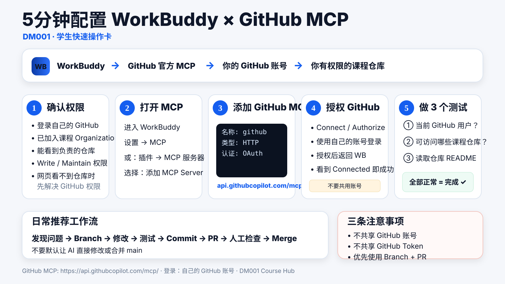

T01 · 5 MINUTES
WorkBuddy × GitHub MCP
使用 GitHub 官方 Remote MCP，让 WorkBuddy 在你的 GitHub 权限范围内读取和协作课程仓库。
打开详细教程 →
课程资料、AI 工具、代码仓库与项目实践统一从这里开始。当前版本先建立 Course Hub 与开发环境，后续章节、实验和学生项目将持续加入。
课程不是只读网页。我们会把 GitHub、AI Agent 和项目式学习放进同一套工作流中。
让 WorkBuddy 通过 GitHub 官方 MCP 读取与协作课程仓库。
现在开始不学命令，只理解版本、分支、Pull Request、合并与冲突。
8 分钟章节、讲义与课堂材料将按课程进度逐步发布。
即将加入学生小队通过独立仓库开展数据挖掘项目。
规划中纯静态、离线可用的学习辅助工具，所有数据只保存在你的浏览器本地，不上传服务器。
专注 / 短休息 / 长休息自动循环，时长可调，环形进度与今日专注统计，支持快捷键与提示音。
使用 GitHub 官方 Remote MCP，让 WorkBuddy 在你的 GitHub 权限范围内读取和协作课程仓库。
打开详细教程 →
不要求记任何 Git 命令。只理解 Repository、Commit、Branch、Pull Request、Merge 与 Conflict，让你能够看懂 Agent 在 GitHub 上对项目做了什么。
打开 Git 原理教程 →V0.1 只先把地基做好。内容区会随着实际教学继续扩展，而不把课程结构过早写死。
课程首页、统一导航、工具接入与基本规范。
按实际授课结构加入章节、案例、数据与练习。
把小队仓库、Issue、PR 与课程项目评价逐步连起来。